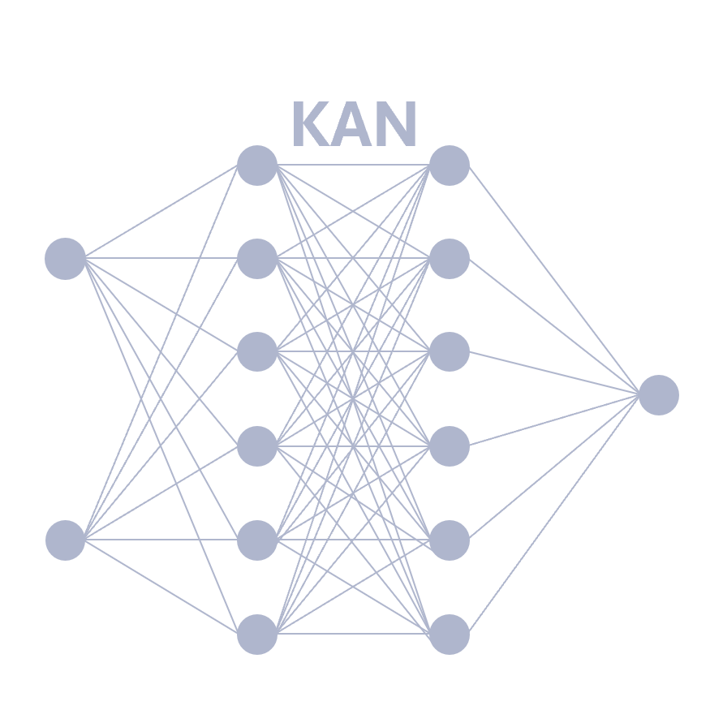
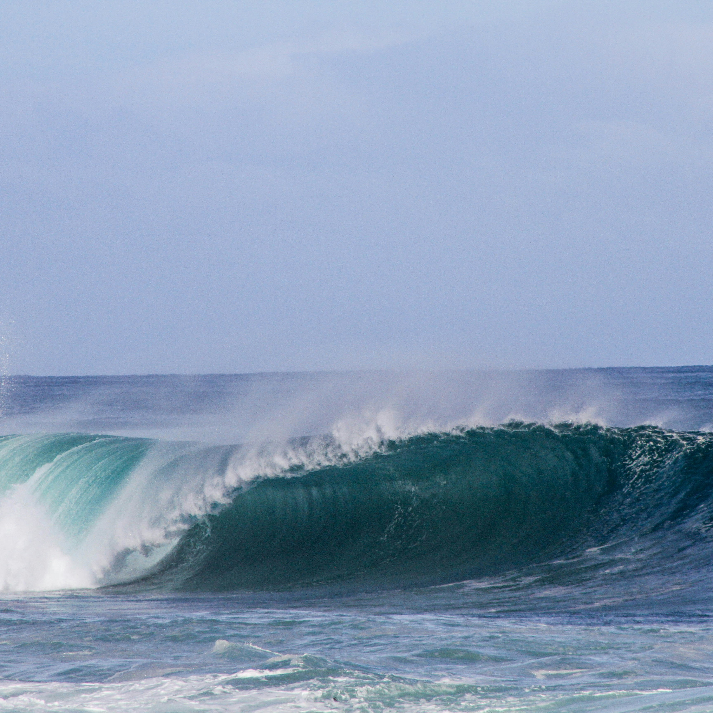

Portfolio:
Here is a more complete collection of my previous works. I feel that the breadth of these projects effectively demonstrates both my adaptability and my desire to learn new skills.
If you have any questions regarding the work I have presented here, feel free to email me (see the contact tab above).

L1-norm and Lasso Regression
This project discusses the mathematics (specifically the linear algebra) behind the use of the 1-norm in Lasso Regression. Lasso Regression is a type of regularized linear regression that is popular to mitigate overfitting and perform feature selection.

Kolmogorov-Arnold Networks
In this project, I have created a short presentation discussing a recent landmark paper in machine learning on Kolmogorov-Arnold Networks (KANs). KANs show great promise in surpassing the efficiency and flexibility of traditional neural networks.

Improving Wave Farm Design
Wave farms hold the potential to help us secure a renewable energy future but they are difficult to design. Here, machine learning tools are used to build a model that quickly returns accurate predictions, allowing faster design optimization.